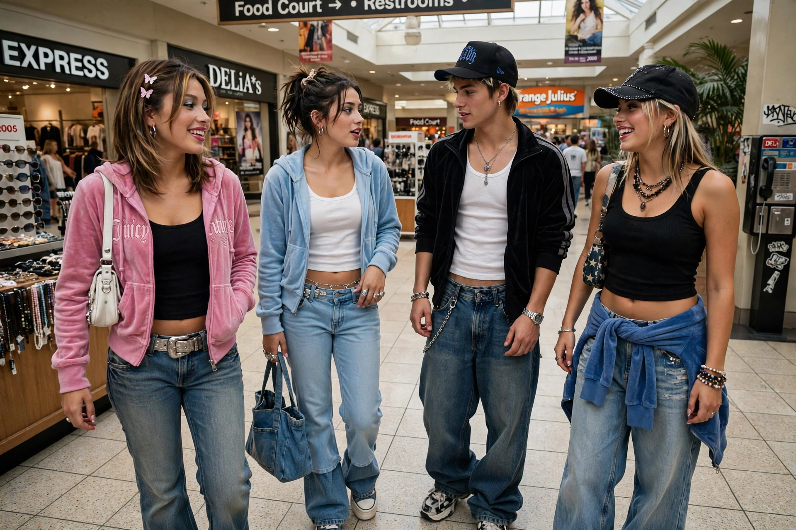

| 2000s in fashion | |
|---|---|
 | |
| Period | 2000–2009 ("the Noughties") |
| Hallmarks | Low-rise jeans, boho-chic, emo and scene styles, fast fashion, logomania |
| Key drivers | Celebrity culture, reality TV, rise of fast-fashion chains |
Fashion in the 2000s was shaped by globalization, the rapid rise of fast fashion, and celebrity-driven trends disseminated by cable television, magazines, and the early internet. The decade moved from the futuristic minimalism and denim mania of the early 2000s through mid-decade boho-chic, emo, and hip-hop-influenced styles, ending with a late-decade revival of 1980s looks.
The first years retained late-1990s minimalism alongside a Y2K futurist aesthetic: metallic fabrics, space-age accessories, and wraparound sunglasses. Women's staples included low-rise bootcut jeans, crop tops, halter tops, cargo trousers, and denim-on-denim outfits; men's fashion featured baggy jeans, frosted tips, and leisure sportswear. Matching velour tracksuits, popularized by Juicy Couture, became an emblem of casual celebrity style.
Boho-chic — floaty peasant blouses, tiered skirts, oversized belts and sunglasses — dominated women's fashion around 2004–2005. Skinny jeans displaced bootcuts from about 2005. Subcultural styles flourished: emo and scene fashion with side-swept fringes and studded belts, and hip-hop fashion featuring oversized jerseys and Timberland boots. Fast-fashion retailers such as H&M, Zara, and Forever 21 accelerated trend turnover.
The late decade saw a strong 1980s revival: neon colours, leggings, acid-wash denim, shoulder pads, and statement belts, alongside "indie" and hipster styles of plaid shirts, skinny jeans, and vintage tees. The 2008 financial crisis briefly revived interest in classic, understated dressing. Accessories of the era included trucker hats, Livestrong wristbands, Ugg boots, Crocs, and oversized "It bags".